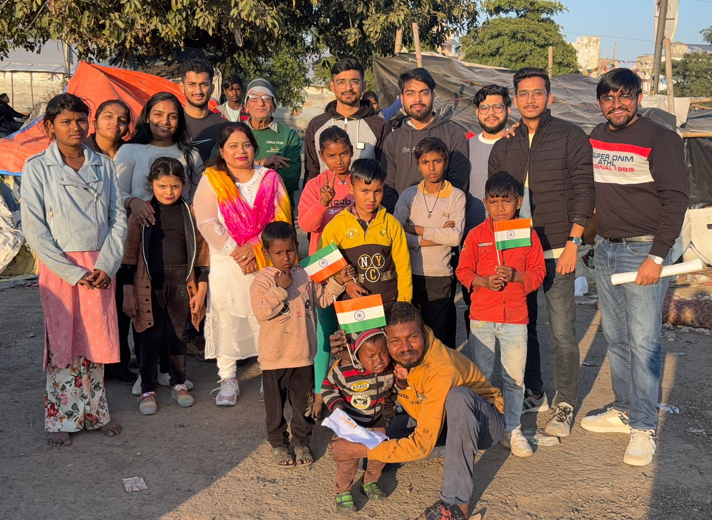

Uniting Minds For A Lasting Social Change
Founded on September 23, 2020 by Govind Shukla in Bilaspur, Chhattisgarh, InAmigos Foundation is an active youth-led movement creating measurable impact across 28 states of India in education, hunger alleviation, animal welfare, women empowerment, and green ecology.
28+
States Across India
100K+
Nutritious Meals
5,000+
Interns & Volunteers

Authentic Grassroots Action
On-ground team drives active across 28 Indian states
Committed To Genuine Grassroots Transformation
Founded with the core belief that youth energy and social empathy can solve deep-rooted socio-economic challenges across India.
Bridging The Gap Between Empathy and Action
InAmigos Foundation operates as a licensed Section 8 Non-Profit Organization, certified by the Central Government of India. Guided by founder and CEO Govind Shukla, our mission unites university students, young writers, creative designers, and experienced social workers to lead impactful field campaigns.
With verified 80G and 12A tax exemption, CSR-1 registration, NITI Aayog Darpan accreditation, and IAF ISO 9001:2015 certification, we guarantee full operational transparency and direct community accountability in every initiative.

#InAmigos
Uniting minds, youth, and communities across 28 states for measurable social good.
Ongoing Initiatives Driving Impact
Discover our six flagship initiatives, each designed to resolve vital grassroots issues with real field action.
 Child Education
Child Education
Project BachpanSala
Nurturing young minds by providing educational materials, digital literacy, school books, stationery kits, and community learning centers to underprivileged children living in slums and rural villages.
 Hunger Relief
Hunger Relief
Project Seva
Combating hunger through daily food drives, nutritious cooked meals, dry ration kits, clean drinking water, and winter warm clothes distribution to homeless individuals and economically vulnerable families.
 Animal Welfare
Animal Welfare
Project Jeev
Protecting stray animals through daily community feeding, emergency medical rescue, anti-rabies vaccination drives, and reflective night collars to prevent road accidents.
 Women Empowerment
Women Empowerment
Project Udaan
Fostering dignity and economic independence by conducting menstrual hygiene awareness sessions, distributing eco-friendly sanitary pads, and training rural women in vocational tailoring and self-help skills.
 Environment
Environment
Project Prakriti
Restoring local ecosystems through large-scale nationwide tree plantation drives, seed-bombing, community clean-up initiatives, and promoting anti-single-use-plastic awareness in urban and rural hubs.
 Youth Leadership
Youth Leadership
Project Vikas
Equipping college students, content writers, graphic designers, and social ambassadors with hands-on internship experience, leadership mentoring, verified certificates, and letters of recommendation.
Quantifiable Social Footprint
Every number represents a child mentored, a life nourished, or a tree taking root across 28 states.
100,000+
Nutritious Meals Served
15,000+
Children Enrolled
50,000+
Animals Rescued & Fed
75,000+
Trees Planted
28
States Across India
#InAmigos Campaigns & Content Writing
Our team of youth interns, content writers, and digital ambassadors craft compelling stories to break stigmas, educate the public, and inspire on-ground action.
Social Cause Content Writing
Research & Awareness ArticlesOur student writers produce in-depth articles on menstrual health taboos, stray animal protection guidelines, education equity, and grassroots food rescue strategies published across digital platforms.
Digital Media Campaigns
#InAmigos MovementCreative social campaigns on Instagram reels, LinkedIn articles, and YouTube video series highlighting ground volunteers distributing rations, saving injured animals, and teaching rural children.
Internship & Skill Growth
Project Vikas LeadershipInterns gain verified social sector experience, portfolio-worthy publications, direct mentorship, and performance-based Certificates of Completion and Letters of Recommendation (LOR).
Field Impact Gallery
Real photographs from our on-ground drives across 28 states of India. No AI generated placeholders.




Join InAmigos As A Volunteer or Intern
Gain real-world experience, contribute to society, and build your resume with verified NGO certification.
Connect With #InAmigos Online
Stay updated with our daily ground activities, intern articles, and project highlights on all official platforms.
Instagram
@inamigos
View PostsFacebook
InAmigos Official
Follow PageLinkedIn
InAmigos Foundation
Network With UsTwitter / X
@InamigosF
Read TweetsYouTube
@inamigosfoundation4296
Watch Videos